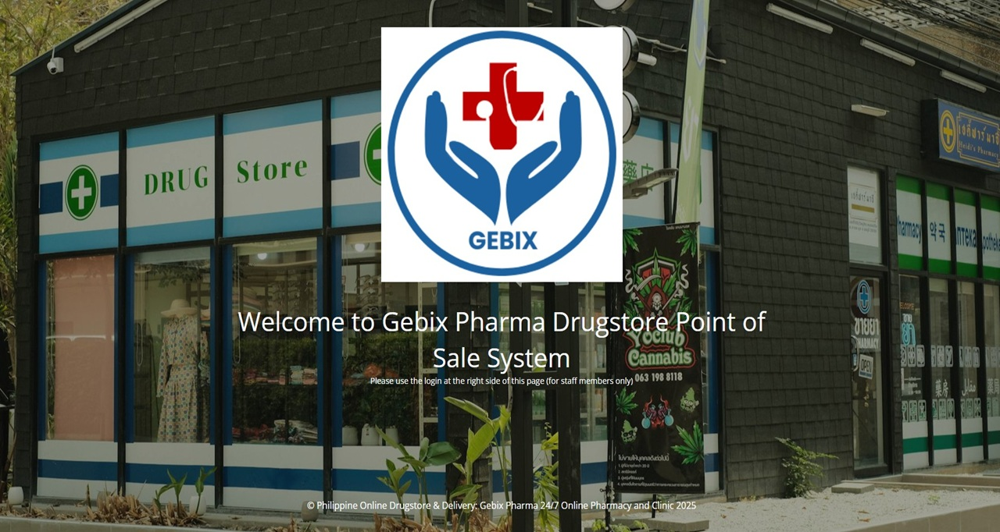
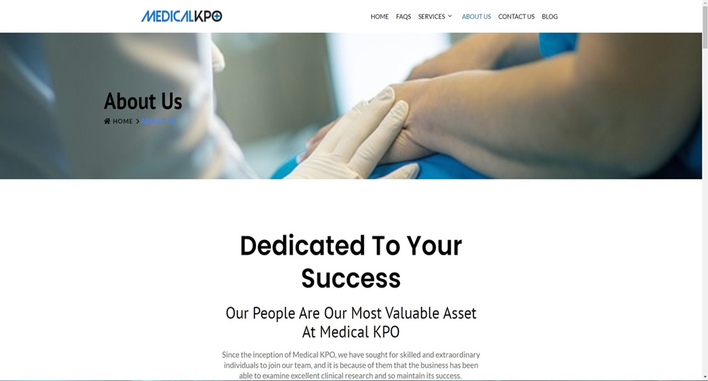
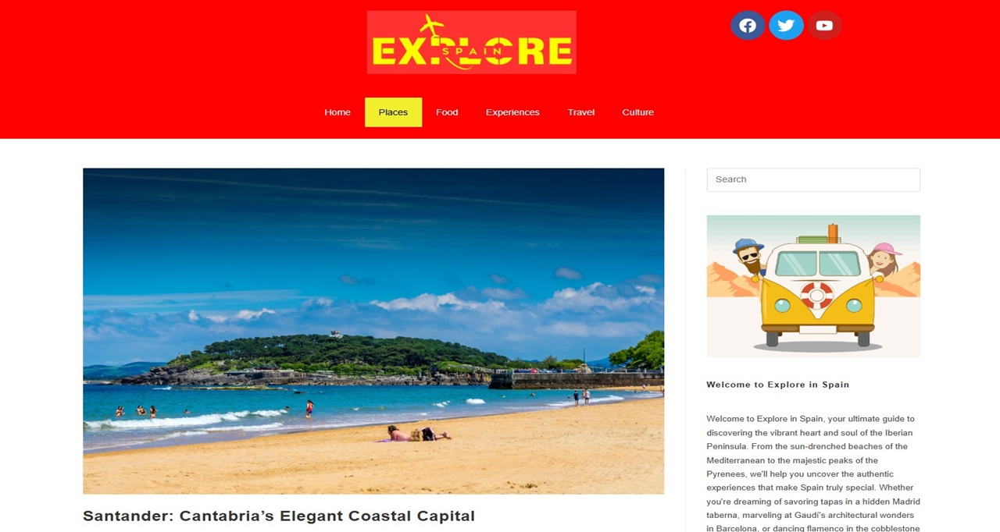
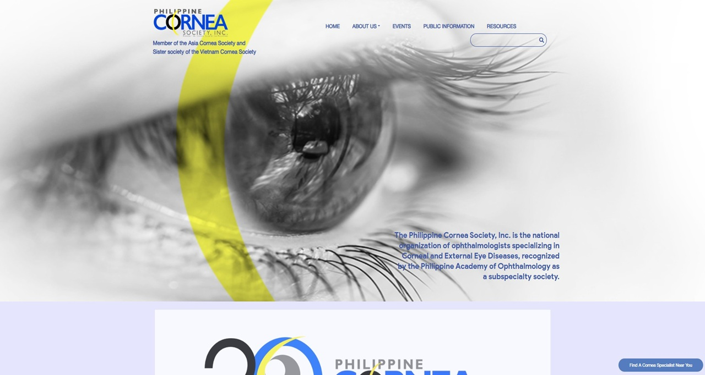
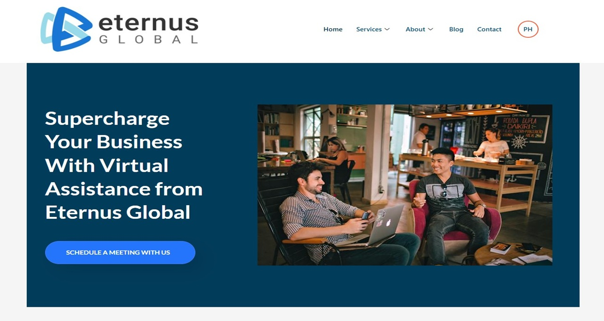

Ecommerce
Gebix Pharmacy
WooCommerce storefront experience with POS and events functionality.
View live siteSelected work
From site architecture to the final responsive detail, I turn design direction into practical websites that are easier to discover and easier to use.

WooCommerce storefront experience with POS and events functionality.
View live site
WordPress implementation with a polished corporate layout, clear information hierarchy, and an SEO-ready foundation.
View live site
Responsive destination content with Elementor and custom CSS refinements.
View live site
Accessible member resources and event content in a responsive WordPress experience.
View live site
Custom website implementation supporting a project-based junior developer role spanning SEO, frontend, and ongoing technical work.
View live site